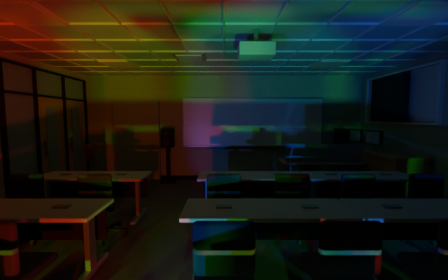
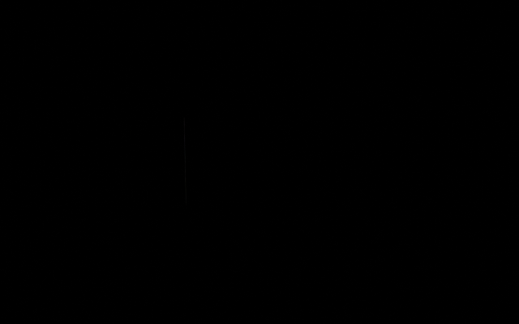

VENUE VOLUME · CLASSROOM MATERIAL STUDYmappedRoom
Photo-derived surface detail on the original opaque room mesh. Dynamic lighting and occlusion come first.
USDZ · Blender · Build & validation notes · Raw comparison results
Desktop proof only. Vision Pro maximum smooth light count is unmeasured. The app keeps eight shadow beams by default and provides higher budgets for device profiling.
Same lighting, same geometry
18,744 triangles · 68 mesh chunks · 13 materials. Six shared textures add about 0.55 MiB to the package, with roughly 4 MiB estimated RGBA8 texture memory including mipmaps. Surface detail is approximate; unique wall graphics are not mapped.
baseline · 8 shadow lights
mappedRoom · 8 shadow lightsbaseline · 0 shadow lights
mappedRoom · 0 shadow lights Review corners
Offline render cost
Blender Cycles · median of three renders after warmup. Units are seconds per still render, not headset frame times or FPS. Fixture rigs are absent. Small differences include measurement noise. See the JSON for the renderer, device and settings; no timing rows appear after a structural-only rebuild.
| Shadow lights | Original seconds | Mapped seconds |
|---|
| 0 | 1.055 | 1.104 |
| 1 | 1.285 | 1.340 |
| 2 | 1.407 | 1.478 |
| 4 | 1.516 | 1.575 |
| 8 | 1.655 | 1.640 |
| 16 | 1.736 | 1.727 |
| 32 | 1.866 | 1.831 |
| 64 | 1.933 | 2.013 |